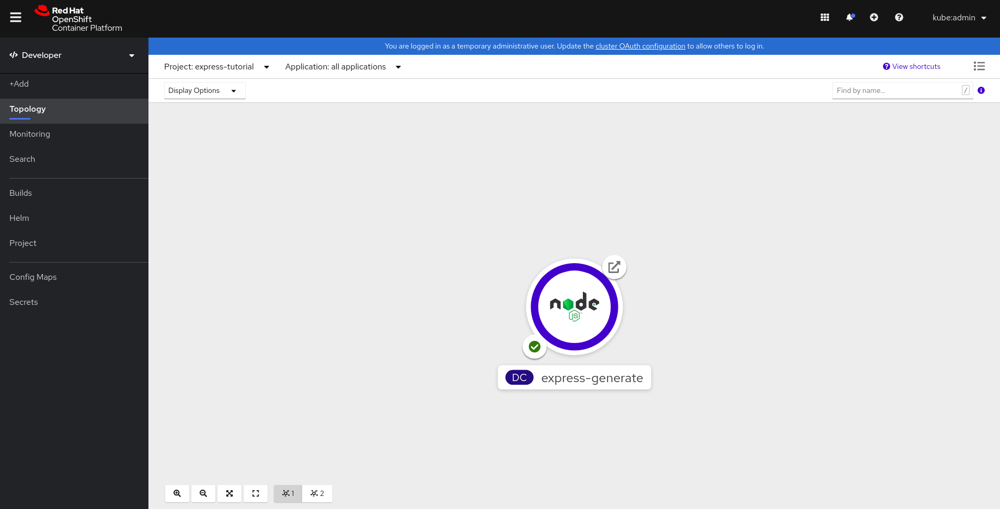
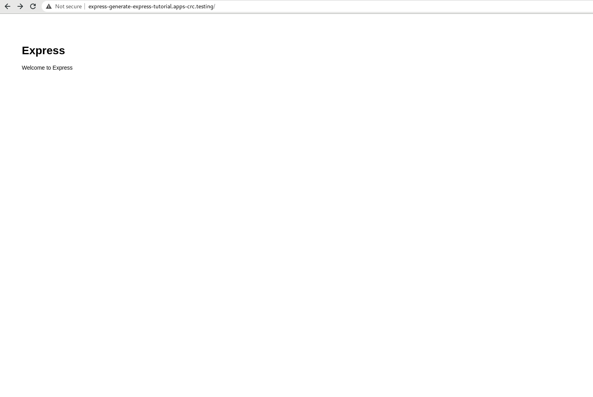

This guide we will show how easy it is to deploy an Express.js Application to Openshift in just a couple steps using the Nodeshift CLI
To run the Node.js example, this guide assumes that you have a recent version of Node.js installed. Long Term Support(LTS) and Current Versions can be downloaded from the official Node.js Organization Site. These downloads also comes with current versions of npm, which is the package manager for Node.js
This guide also mentions a cli tool called npx, this also comes standard with recent versions of npm. To learn more about these tools, see the links in the appendix section at the end of this guide.
Generating a new Express.js application can be done fairly easily with the Express.js Generator. Using the npx command, the generator doesn't even need to be installed, but can be run like this:
$ npx express-generator .
This will generate a basic Express.js application in the current directory. If you want to see the application in action locally, be sure to run npm install and then npm run start. In the next step we will be deploying this to an Openshift instance, so running locally is not necessary.
With the application generated, it can now be deployed to an Openshift Cluster* with only one other command using the Nodeshift CLI tool. Again, npx is used so nothing needs to be installed globally
$ npx nodeshift --deploy.port 3000 --expose
While the nodeshift cli has other commands, the default command is to perform an s2i deployment. The deploy port is specificed since by default, express will start applications on port 3000 and the expose flag is used to create a Route, so the application is accessible outside the Openshift Cluster
* This guide assumes access to an Openshift Cluster, see the appendix section below for links on getting access to an Openshift Cluster
Once the application deployed, there are a couple of ways to interact with it.
1. Using Openshift Developer Topology view, it is easy to see our running Application pod. This might looks something like this:

Clicking on the top right icon of the circle(this is the running application inside a Kubernetes Pod) will then open up the "Welcome To Express" Web Page, which will look like this:

2. Another, less UI friendly way, is to use curl to access the applications Route which might look like this:
$ curl http://express-generate-express-tutorial.apps-crc.testing/
If you do not already have access to an Openshift Cluster, you can start a local copy by using Code Ready Containers.. Note that you will need to create a Red Hat Developers login to download.
Node.js is an open-source, cross-platform, JavaScript runtime environment. It executes JavaScript code outside of a browser. For more information on using Node.js, see the Node.js Website.
npm is the world’s largest software registry. Open source developers from every continent use npm to share and borrow packages, and many organizations use npm to manage private development as well. npm's website is here
npx is a tool intended to help round out the experience of using packages from the npm registry — the same way npm makes it super easy to install and manage dependencies hosted on the registry, npx makes it easy to use CLI tools and other executables hosted on the registry. npx is included with npm and is installed with the basic Node.js installer